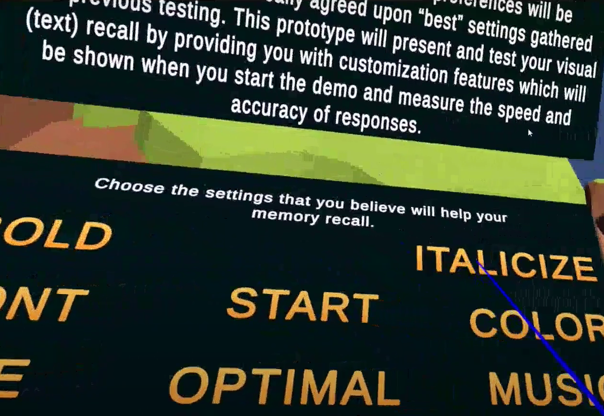

Improving Memory Recall Experiment
Languages/Tools Used: C#, Jira, and Unity
Working in a team of 4, we developed a project in Unity that studied which font, font size, font color, and other settings gave participants the best memory recall when taking a vocabulary quiz. This experiment was originally administered through a 2D interface but was translated into a 3D VR project late in development as the professor encouraged this.
How it Works
The Unity project was created to conduct an experiment on the participant by allowing them to pick what font, color, and size they think would best help their memory recall. They were then shown vocabulary words and given a quiz using the settings they chose, another quiz using the "best" settings we researched, and finally a test using a mix of the best settings and the user-defined settings. The users' accuracy and speed on these quizzes were recorded. The mixed settings appeared to perform best in terms of accuracy, while the user-selected settings generally provided the best speed metric for participants.
Skills Learned
I learned the basics of using Unity and C# throughout the creation of the experiment and also grew in my ability to work in a team to conduct an experiment.
